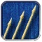
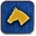
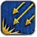
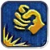
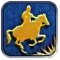
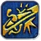
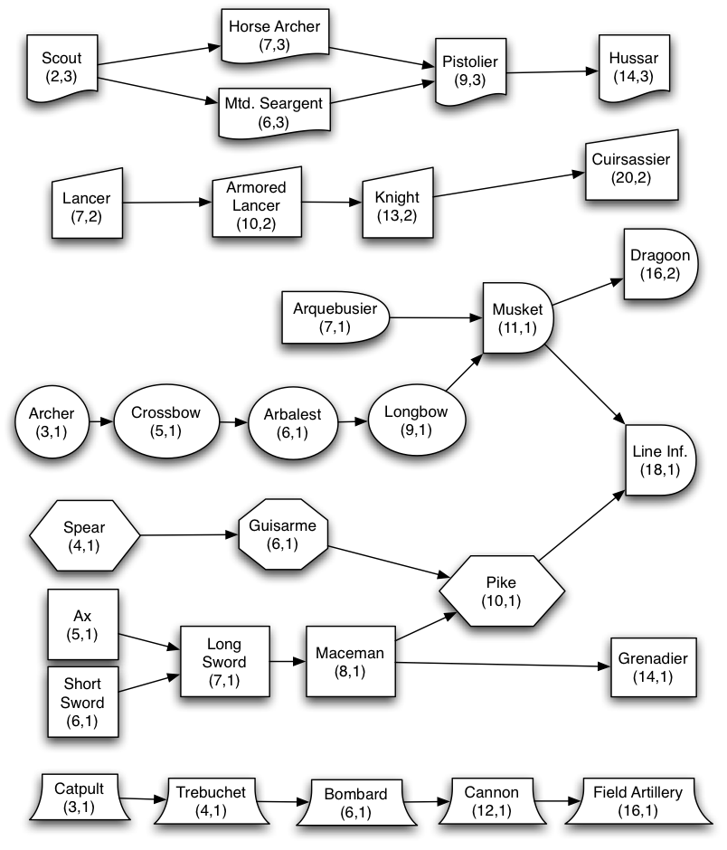

Detailed Guide to Units
This section is designed to give you more detailed information on the units in RFC Europe. Of course much of this is available in the Civilopedia, but our more coherent presentation here should help you master the battlefields of Europe more quickly.
Unit Class Table
| Class | Units | Characteristics | Role |
|---|---|---|---|
| Polearm | Spearman, Guisarme, Pikeman | Cheap, low resource, and often draft-able. Strong bonus vs. Heavy Cavalry. | Strongest on defense against Heavy Cavalry. Use inside cities or on defensive terrain. Cheap enough to be sacrificed. |
| Light Cavalry | Skirmisher, Horse Archer, Mounted Seargent, Pistolier, Hussar | Relatively cheap, move 3, weak units. Patrols against enemy spies and flanks siege weapons. | Use as explorers, scouts, patrollers, pillagers, and as reserve troops. |
| Archer | Archer, Crossbowman, Arbalestier, Longbowman | Cheap, no resource units with defensive bonus and first strikes. Some have bonuses vs. units with armor. | Primarily city and terrain defenders. The bonus against armored units make these an acceptable choice to attack more expensive units. |
| Heavy Infantry | Axeman, Swordsman, Longswordsman, Maceman, Grenadier | Bonuses for attacking cities and vs. polearm infantry. Slow and relatively expensive. | Use to attack cities and polearm troops; they are sometimes also useful in defensive stacks. |
| Heavy Cavalry | Lancer, Armored Lancer, Knight, Cuirassier | Expensive and powerful, with decent mobility. No defensive bonuses. | The strongest units outside of cities, use these units to kill barbarians and pillagers and for strong quick strikes against weakly defended cities. |
| Gunpowder | Arquebusier, Musketman, Line Infantry, Dragoon | Initially cheap low resource units, these eventually assume the roles of both polearms and heavy infantry. | Multipurpose units, useful for city defense/attack. Lack of counters make these units more valuable then their raw strength would suggest. |
Unit Upgrades
Another useful way to visualize the units in the game is to consider the upgrade path. In this chart, each unit class has a distinct symbol, and arrows show the upgrades available. This simplified chart does not include unit bonuses against other unit classes. In general, units upgrade within their own class types, though this is broken during the renaissance, as archers promote into the gunpowder line and heavy infantry promote into the polearm line, which is the dominant unit on the battlefield. Late game, a few units have rather surprising classes. Grenadiers, because of their short range attack, revive the heavy infantry line. Dragoons, though move 2, are treated as gunpowder units rather than cavalry as they would fight only on foot. This distinction, however, is not made for medieval units (knights would often dismount to fight, you can think of a Maceman as a dismounted knight if it makes you happy).
